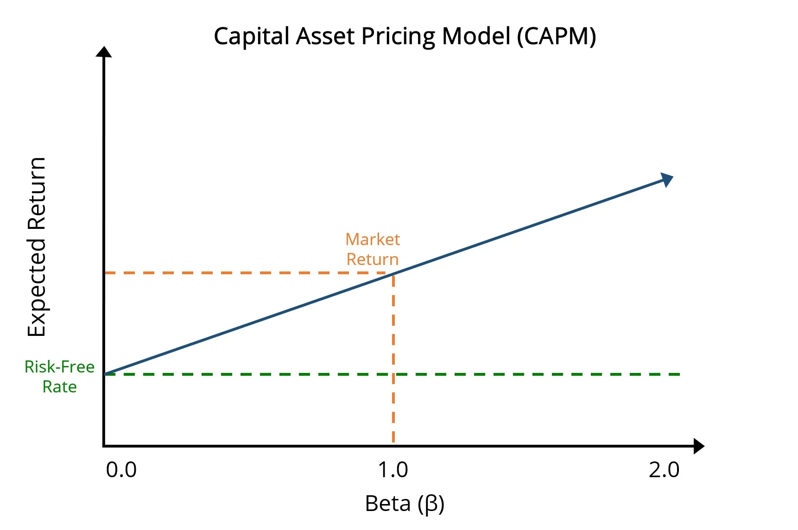
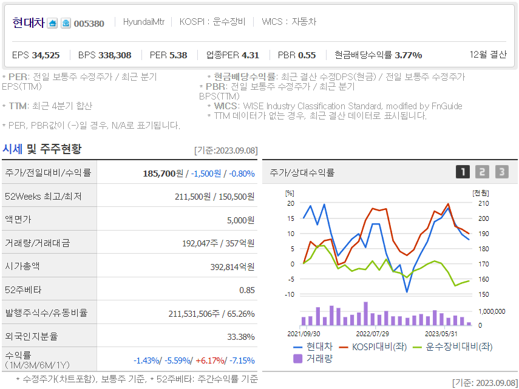

Capital Asset Pricing Model#
논문을 읽기 전에 알아야 할 기본 지식을 짚고 넘어가도록 하겠습니다. 먼저 자산 가격 결정 모델, CAPM(Capital Asset Pricing Model)[Sharpe, 1964]에 대해서 간단히 설명하겠습니다.
CAPM은 현대 포트폴리오 이론의 창시자 Harry Max Markowitz의 제자인 William F. Sharpe가 1964년에 제시한 모델입니다. CAPM은 개별 자산의 예상 수익률을 결정하기 위한 방법으로, 시장의 위험과 개별 자산의 위험 간의 관계를 설명합니다. 이 모델은 투자자가 위험을 회피하는 경향이 있으며, 추가적인 위험을 감수하기 위해 추가적인 수익을 요구한다는 가정에 기반합니다. CAPM의 핵심 변수는 베타(\(\beta\))로, 개별 자산의 수익률이 전체 시장의 수익률에 얼마나 민감하게 반응하는지를 나타냅니다.
[KENTON, 2023]
1. Introduction:#
CAPM은 무위험 이자율, 예상 시장 수익률, 시장 움직임에 대한 자산의 민감도(베타)를 고려하여 투자에 대한 기대 수익을 결정하는 데 사용되는 모델입니다.
2. The Formula:#
\(E(R_i) = R_f + \beta_i (E(R_m) - R_f)\)#
Where:
\(E(R_i)\) = Expected return on the investment (자산의 기대 수익률)
\(R_f\) = Risk-free rate (무위험 수익률, 한국에선 CD금리 또는 KOFR)
\(\beta_i\) = Beta of the investment, which measures its sensitivity to market movements (시장 움직임에 대한 자산의 민감도)
\(\ E(R_m)\) = Expected return of the market (시장의 기대 수익률)
3. Conceptual Understanding:#
Risk-free rate \(R_f\): 현실에는 존재하지 않지만, 리스크 없이 투자하여 얻을 수 있는 가상의 수익률입니다. 무위험 수익률은 보통 국채 수익률을 사용합니다. 한국에선 CD금리 또는 KOFR을 사용합니다.
Market Return rate \(E(R_m)\): 시장 수익률은 시장 전체의 평균적인 수익률을 의미합니다. 미국에서는 보통 S&P 지수를 사용하고, 한국의 경우 KOSPI 지수나 KOSPI 200을 사용하는 편입니다.
Beta \(\beta_i\): 베타는 시장 수익률 대비 자산 수익률의 변동성을 파악하는 지표입니다. 베타가 1이면 시장과 정확히 같은 변동성을 지닌다는 의미입니다. 일반적으로 ~~(항상 그런 것은 절대 아닙니다.)~~ 원자재, 식품 관련 주식은 베타가 1보다 작습니다. 반면 기술주, 바이오 관련 주식은 베타가 1보다 큽니다. 베타가 1보다 크면 시장보다 변동성이 크다는 의미이고, 1보다 작으면 시장보다 변동성이 작다는 의미입니다. 베타가 0이면 시장과 전혀 상관관계가 없다는 의미입니다.
Risk Premium \(E(R_m) - R_f\): 무위험 수익률보다 시장에 투자하는 위험을 Take함으로써 기대할 수 있는 추가 수익률을 의미합니다. 보통 리스크를 Take하면 내가 Take한 만큼의 리스크에 대한 프리미엄을 받을 수 있다고 봅니다.
현대차의 베타, 네이버 금융